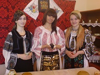

Bistra Mureşului
Numele Bistra provine de la râul de munte Bistra
care are un debit mare la vărsare şi care, prin
corespondentul adjectivului slav bâstro (repede),
dă denumirea locului aflat la ieşirea din Defileul
Deda-Topliţa 2 (Anexa 2 a)
Denumirea este cu atât mai verosimilă, cu cât în
imediata vecinătate se află localitatea Topliţa,
a cărei denumire provine de la adjectivul toplâi
– cald.
Deşi atestată relativ târziu – în anul 1927,
sub această denumire, toponimele existente
în zonă, „Cetăţeaua”, „Cetate”, „După Cetate”
– locuri aflate la 3-4 km de şoseaua naţională,
în amonte de Valea Bistriţei – localitatea
Bistra Mureşului pare
să fie un posibil loc de supraveghere
a ieşirii din defileul Deda
– Topliţa, încă de pe vremea romană2"{ană2
